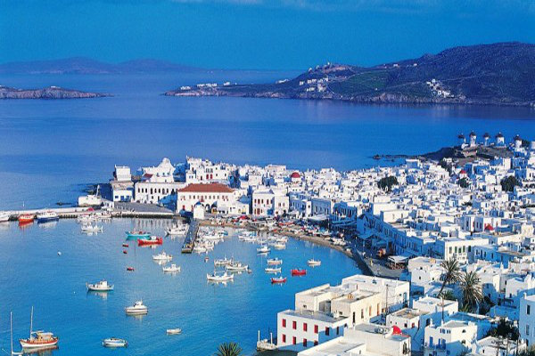

Η Πάρος είναι το τρίτο σε μέγεθος νησί των Κυκλάδων και βρίσκεται δυτικά της Νάξου. Η Πάρος είναι σημαντικός τουριστικός προορισμός και έχει σημαντικό αριθμό παραλιών κάποιες από τις οποίες είναι: Βορειοδυτική πλευρά Λιβάδια, Κριός, Μαρτσέλο, Σουβλιά, Καμίνια (ή Καμινάκια), Άγιος Φωκάς (Παροικιά), Μοναστήρι, ή παραλία Αγίου Ιωάννη, Κολυμπήθρες Βορειοανατολική πλευρά Πιπέρι, Άγιοι Ανάργυροι, Λάγγερη, Σάντα Μαρία, Μικρή Σάντα Μαρία, Αμπελάς, Γλυφάδες, Φιλίζι Νοτιοανατολική πλευρά Τσουκαλιά, Μώλος, Καλόγερος, Πίσω Λιβάδι, Λογαράς, Πούντα, Νέα Χρυσή Ακτή, ή Τσερδάκια, Χρυσή Ακτή, Δρυός, Λωλαντώνης, Γλύφα, Μπουτάρη Νοτιοδυτική πλευρά Φάραγγας, Πίσω Αλυκή, Αγ. Νικόλάος Αλυκής, Βουτάκος, Πούντα (απέναντι από την Αντίπαρο), Αγία Ειρήνη, Παρασπόρος, Δελφίνι, Όρμος του Μπέη
